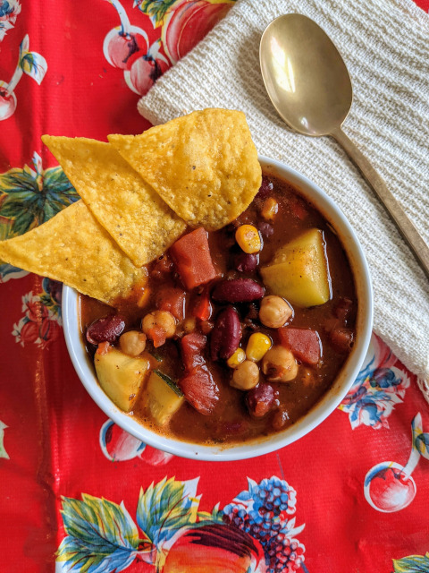

Homemade Slow Cooker Vegan Chili

Description
This makes a huge bowl of vegan chili.
Ingredients
- 2 tablespoons coconut oil
- 2 ½ pounds bok choy, cut into bite-sized pieces
- 6 cloves garlic, grated
- 1 (3 inch) piece fresh ginger, grated
- 3 cups shredded carrots
- 2 teaspoons Chinese five-spice powder
- 1 teaspoon ground cumin
- 12 cups vegetable broth
- 2 (2 ounce) packages cellophane noodles
- 3 cups fresh bean sprouts
- 5 scallions, trimmed and thinly sliced
Steps
- Heat coconut oil in a large pot over medium-high heat. Add bok choy; cook and stir until wilted, 3 to 5 minutes. Stir in garlic and ginger; cook until fragrant, about 1 minute. Add carrots, five-spice powder, and cumin.
- Pour vegetable broth into the pot. Bring the soup to a boil. Add noodles; reduce heat and simmer until noodles soften, about 3 minutes. Stir in bean sprouts and scallions. Remove soup from heat; let stand until flavors combine, about 5 minutes.
Index